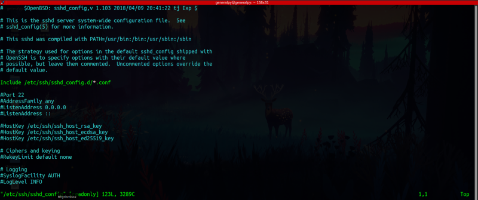
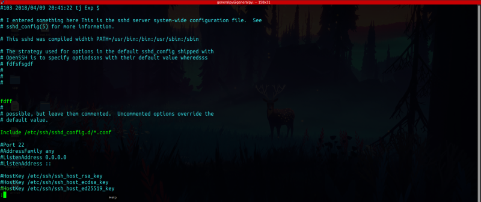
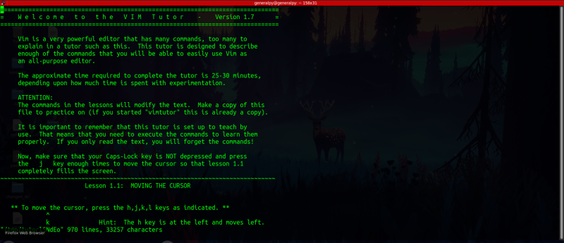
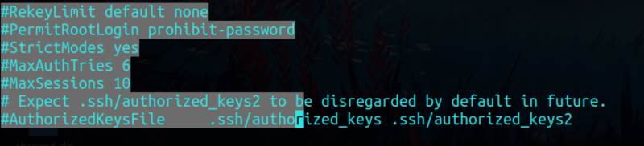
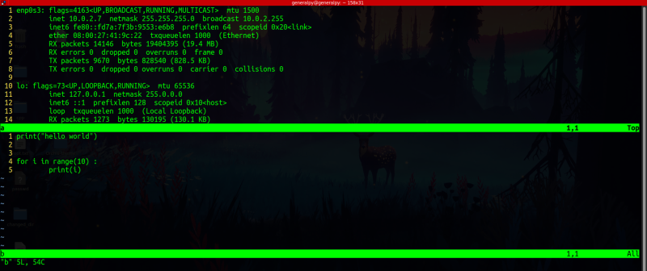
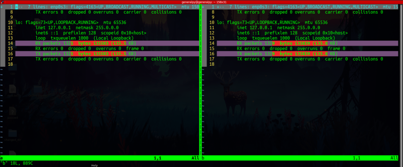
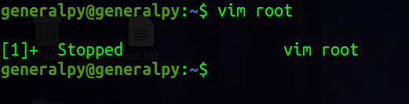
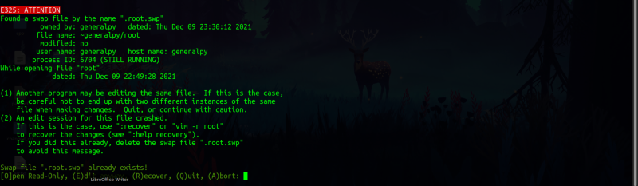

vim is a cli text editor which has some very advanced features. vim stands for VI Extended. vi is a text editor which was introduced with unix.
vim is very helpful as a text editor. We can directly start it from cli.
Usually vi comes preinstalled but in some case vim also comes preinstalled but we can install vim by sudo apt install vim.
To open a file simply write vi and name of file. vim creates file if it doesn't exists.
vi filename
sshd_config file open in vi.

vi is an alias to vim in almost all linux distros.
vim is a mode based editor, it has 3 modes :
1. command
2. insert
3. last line
Command mode : vim by default starts in command mode. Everything you type here in command mode will be interpreted as a command which have some predefined functions like x deletes characters and r replaces a character.
To return to command mode from any mode, you can pres esc key to reach to command mode.
Insert mode : To write into vim like any other text editor we have to enter insert mode. We can enter simple insert mode by pressing i(lowercase i).By pressing i we can start entering text from starting of cursor(text will be added be fore the cursor, don't get confused by it) . We can use I(uppercase i) to start inserting from beginning of line where cursor is. By pressing a(lowercase a) we can start entering text after the cursor, inverse of i(append). By pressing A(uppercase a) we can start writing at the end of line. By pressing o(lowercase o) we can start adding text below the current line and by pressing O(uppercase o) we can start adding text above the current line.
Last Line mode : last line mode is used to do some file handling tasks like save file, quite file, quite with saving etc. To get to last line mode, press :(colon key) and colons will appear in the last line of the vim.
Notice the last line.

We can quit by typing q! in last line mode.
To save a file we can type w!.
We can write both of these together to save and quit(wq!).
We can write shift + zz from command mode to save and quite.
To practice and learn vim , we can write vimtutor command in terminal. It shows us a file which we can read and edit freely for practice as each time we start vimtutor that file is prepared again.
Vimtutor default file.

To run any shell command from vim, go to last line mode and then press ! and then write command you want to run.
To perform a forward search, goto command mode and then type / and then term to search. We can then navigate between matchs using n and shift + n same as less.
To perform bakcward search we type ? instead of / and then search the term. We can use G to go to end of file.
Another way to goto next occurence of current word(word where cursor is ) we can use *. Previous occurence is found with #.
To replace all occurences of any pattern with some other word we have to go to last line mode and then type %s/searched_term/term_to_replace/g. For example to replace root with toor we write %s/root/toor/g.
To return file contents to its last saved state we can use e! in last line mode. This undos everything till last save.
To undo last operation only type u which is equivalent to ctrl+z in a graphical editor. And to redo type ctrl + r.
To cut a line below the cursor press dd. This will delete line and copy it to clipboard. To paste that line press p. This will paste clipboard contents just below the cursor. To cut more than 1 line, type number of lines you want to remove and then press dd.
To copy contents, first we have to select them. We can press v to select individual characters, V(uppercase v) to select lines and ctrl + v to select rectangular blocks and then use arrow keys to navigate.
Rectangular block selection. Here contents are selected like a rectangle, same in width everywhere. For example if we select 10 character in first line and press down arrow key , then automatically next line's 10 characters will be selected.

After selecting, we can press y to copy text.y in vim means yanked which means copy in other text editors.
Press p to paste after the cursor and P to paste before the cursor.
Last line mode can be used to configure vim. Eg: set nu in last line mode is used to display line numbers in current editor window. We can remove line numbers by set nonu. nu for number.
To enable syntax highlighting we can type syntax on in last line mode and syntax off to disable it.
Note that these changes are not permanent. They will be removed when we restart vim. To make these changes permanent, we have to create a .vimrc file in user's home directory.
In .vimrc write all vim commands you write in last line mode.
To move to a line in vim, we can type line number in the last line mode and press enter. To get to end of file press G and press gg to reach to start of file in command mode.
We can open multiple files in vim. Just simply write file names after vim to open them. We can navigate between files by typing n or next in last line mode for next file and N and prev in last line mode for previous file.
We can use -o flag while opening multiple files to open each file in different windows, which is known as stacked windows. We can navigate between windows by using ctrl + w.
-o flag stacked windows.

We can open files in differnece mode where we open side by side windows and show differences between files. -d flag is used for that purpose. We can navigate between files by using ctrl+w.
difference mode files.

There is one vimdiff command which runs vim with required arguments.
Note that if we close vim abruptly while a file is open like closing the terminal or pressing ctrl + j we will presented with a prompt like below :
Stopped vim.
4

We can either recover the file and save it or can delete the swap file.